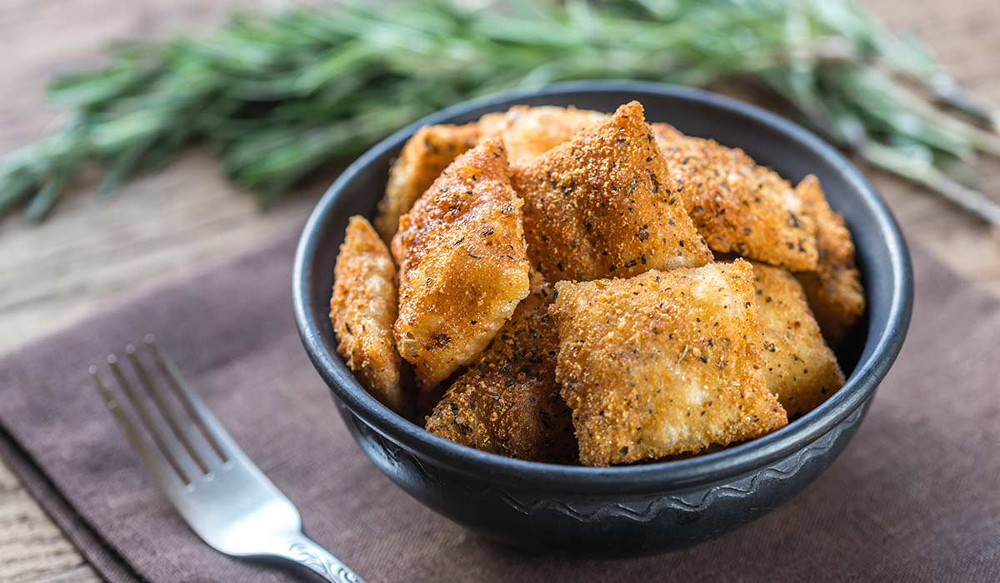

Ravioli recipe

Ravioli are a type of pasta comprising a filling enveloped in thin pasta dough. Usually served in broth or with a sauce, they originated as a traditional food in Italian cuisine. Ravioli are commonly square, though other forms are also used, including circular and semi-circular (mezzelune).
Ingredients
- 1 cup mashed, cooked butternut squash
- ½ teaspoon salt
- ½ teaspoon freshly ground black pepper
- 1 pinch cayenne pepper
- ½ cup mascarpone cheese
- 1 egg yolk
- ⅓ cup grated Parmesan cheese
- 1 (16 ounce) package round wonton wrappers
- 2 tablespoons butter
- 1 clove garlic, unpeeled
- chopped fresh sage to taste
- 1 tablespoon grated Parmesan cheese, or to taste
Steps
- Place cooked squash into a mixing bowl. Add salt, black pepper, and cayenne pepper. Stir in mascarpone cheese, egg yolk, and 1/3 cup Parmesan cheese, mixing until the filling is smoothly combined.
- Place a wonton wrapper onto a working surface. Wet the tip of a finger in water, and run it all along the outer edge of the wonton skin to moisten. Place about 1 teaspoon of filling in the center of the wonton. Fold the wonton in half to make a half-moon shape, and press the edges to seal. Repeat with the remaining wonton wrappers.
- Place a deep skillet over medium-low heat. Stir in butter and unpeeled clove of garlic. Meanwhile, bring a saucepan of lightly salted water to a boil.
- Drop the filled raviolis into the boiling water, a few at a time, and cook until they float to the top, about 2 minutes. Drain the raviolis, and transfer them to the skillet. Turn the heat under the skillet up to medium-high, and cook just until the raviolis are infused with garlic flavor, about 2 or 3 more minutes. Sprinkle with chopped sage, more black pepper, and extra Parmesan cheese to taste.